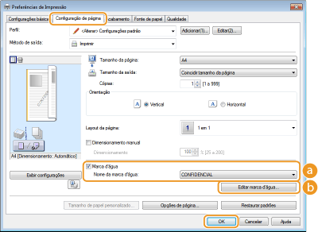
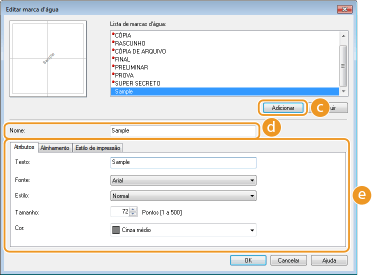

0KU8-01F
 |
Você pode imprimir marcas d'água como "CÓPIA" ou "CONFIDENCIAL" no documento. Você pode criar novas marcas d'água ou usar modelos pré-registrados.
|
Guia [Configuração de página]  Selecione a caixa de seleção [Marca d'água] Selecione uma marca d'água em [Nome da marca d'água] [OK]
Selecione a caixa de seleção [Marca d'água] Selecione uma marca d'água em [Nome da marca d'água] [OK]

 [Marca d'água]/[Nome da marca d'água]
[Marca d'água]/[Nome da marca d'água]Marque a caixa de seleção [Marca d'água] para exibir uma lista de marcas d'água na lista suspensa [Nome da marca d'água]. Selecione uma marca d'água para usar a partir da lista.
 [Editar marca d'água]
[Editar marca d'água]
Exibe a tela para criar ou editar marcas d'água.

 [Adicionar]
[Adicionar]Clique para criar uma nova marca d'água. Podem ser registradas até 50 marcas d'água.
[Nome]
Digite o nome da nova marca d'água.
 [Atributos]/[Alinhamento]/[Estilo de impressão]
[Atributos]/[Alinhamento]/[Estilo de impressão]Clique em cada guia para especificar o texto, a cor ou a posição de impressão da marca d'água. Para mais informações sobre as definições, clique em [Ajuda] na tela do driver de impressora.